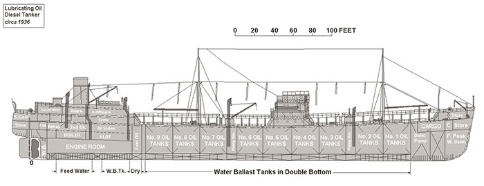
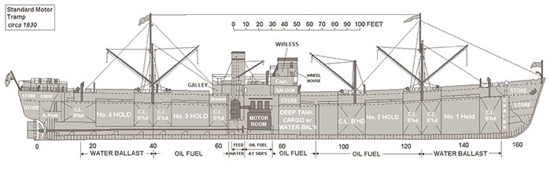
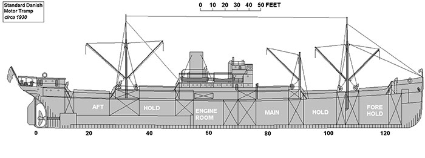
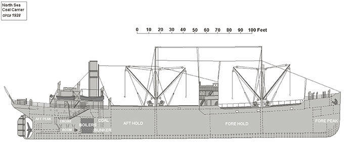
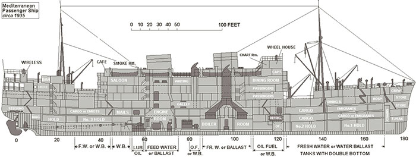
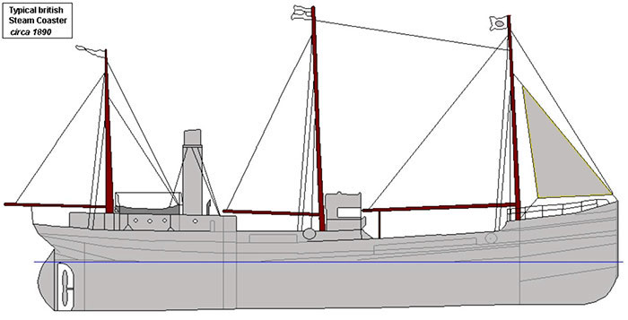

Ship Illustrations
Lubricating Oil Diesel Tanker circa 1936

- Dead-weight tonnage was around 10,310 tons.
- Dimensions - 445ft. x 61ft. x 32ft.
- Power was by a four-cylinder Doxford opposed piston diesel engine - 3,000 bhp.
Standard Motor Tramp circa 1930

- The design shown is of the "shelter-deck" type.
- Deadweight tonnage of 9,200 tons approx. Total capacity of 569,600 cubic feet.
- Dimensions - 422ft. x 54ft. x 28ft. approx.
- Powered by a diesel engine such as the Doxford two-cycle opposed piston type.
- Typical speed of 11 knots.
Standard Danish Motor Tramp circa 1930

- The design shown is of the "long bridge" type.
- Gross tonnage of 3,100 tons approx.
- Dimensions - 326ft. x 50ft. x 20ft. approx.
- Powered by a diesel engine of the four-cycle single-acting 6 cylinder type.
- Typical speed of 10.5 knots.
North Sea Single Screw Coal Carrier circa 1928

- The vessel depicted is a typical "raised quarter-deck" type coal carrier.
- Gross tonnage was around 2,301 tons with a grain capacity of 159,000 cubic feet.
- Dimensions - 275ft. x 41ft. x 19ft.
- Power was by a triple-expansion steam engine.
Mediterranean Passenger Ship circa 1935

- Gross tonnage of 9,000 tons approx.
- Dimensions - 426ft. x 62ft. x 37ft. approx. Passenger accommodation for 470 approx.
- Powered by single-reduction turbines giving 21 knots.
British Steam Coaster circa 1892

- Gross tonnage of 400 tons approx.
- Dimensions - 43.40 x 7.64 x 3.25 meters approx.
- Powered by 2 cylinder compound steam engine.
- Typical speed of 6 knots.